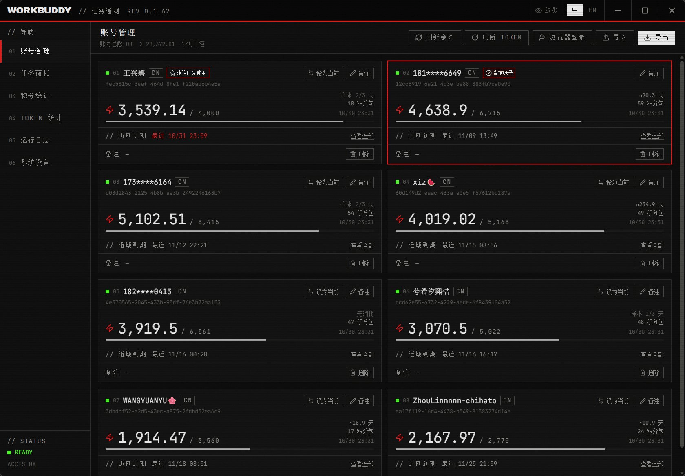
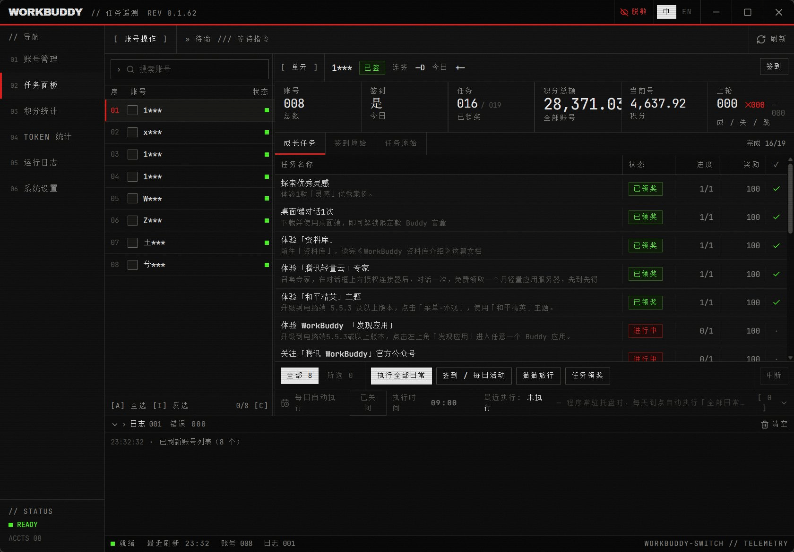
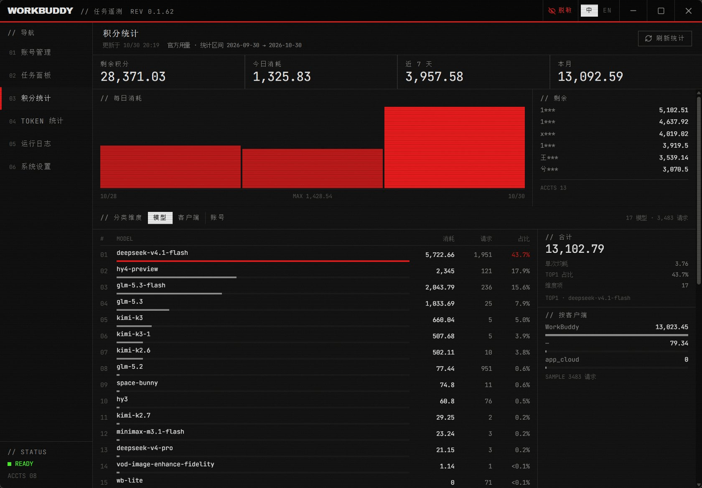
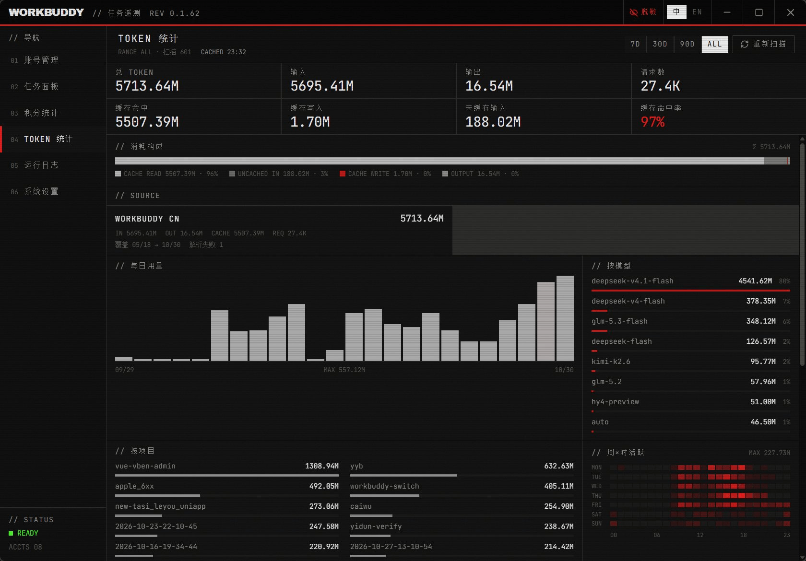
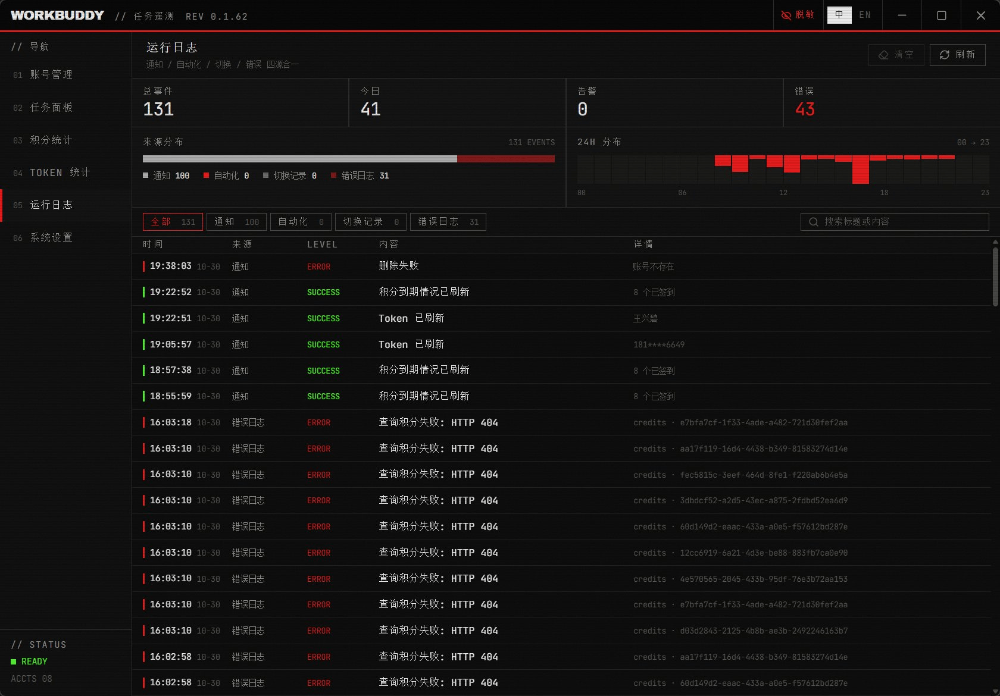

Multi-account console / Tauri 2 + Rust
把多个 WorkBuddy 账号，
当成一台机器来开。
切号、签到、日常任务、积分、TOKEN、日志——一屏管完。 切换前校验真实写入，失败自动回滚；用量天数按余额下降推算，样本不足就说不足。

01 — 06 / six panes
六个分区，各管一件事
同一份数据只出现一次：签到态在单元条，余额在遥测带，日志四源合一。
点击左侧切换 →




01 / ACCOUNTS — 卡片流 · 余额 · 额度到期
what is actually different
六件别家没有做的事
切换本身是红海。省事的是切换前后那几步：先验证、能回滚、算得清、查得到。
01
切号有三道硬门槛
会话数不足直接 fail-closed；写完回读 uid，不一致立刻回滚。
02
天数不够就说不猜
只把余额下降算消耗，跨天按天归一；少于 3 天显示「样本 1/3 天」。
03
限流有台账
次数 / 成功 / 回滚 / 中止 + 平均耗时，出问题先看这一页。
04
健康分给理由
限流 −35、余额为 0 −50，悬停看到全部扣分项，不是黑箱评分。
05
数据能带走
四份 CSV 直接写盘，带 BOM，Excel 双击不乱码。
06
托盘就是读数
不开窗也知道账号数、合计余额、最紧账号还剩几天。
release loop
发版到升级，一条闭环
推 tag 触发 CI，三平台并行构建并签名；客户端验签通过才安装，中间没有手工上传。
GitHub Actions / minisign
STEP 01
改版本号
三处同步
三处同步
STEP 02
打 tag
触发 CI
触发 CI
STEP 03
三平台
并行构建
并行构建
STEP 04
私钥签名
合并清单
合并清单
STEP 05
客户端检查
下载验签
下载验签
STEP 06
静默覆盖
自动重启
自动重启
npm run bump 0.1.2 --tag # 版本号 → commit → tag → push，CI 接手 # 客户端：启动 8s 首查，之后每 6h；读 release 资产 latest.json（不走 API，无 60 次限流）
build matrix
三个平台，同一份代码
Windows、Linux、macOS 的安装包全部由 CI 产出并签名。
v0.1.1 released
WINDOWS● READY
- x64-setup.exe（安装版）
- x64-portable.zip（免安装）
LINUX● READY
- amd64.AppImage
- amd64.deb
MACOS● READY
- aarch64.dmg
- aarch64.app.tar.gz